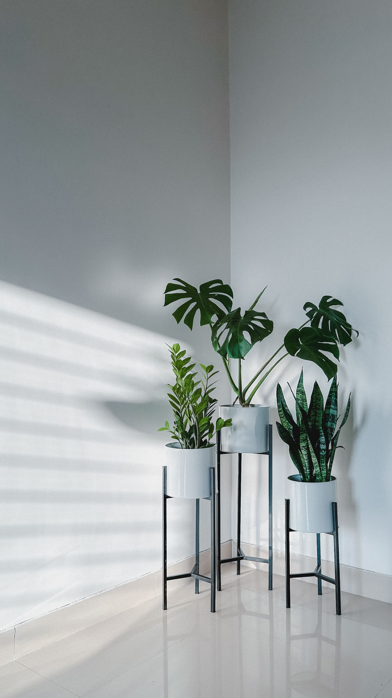
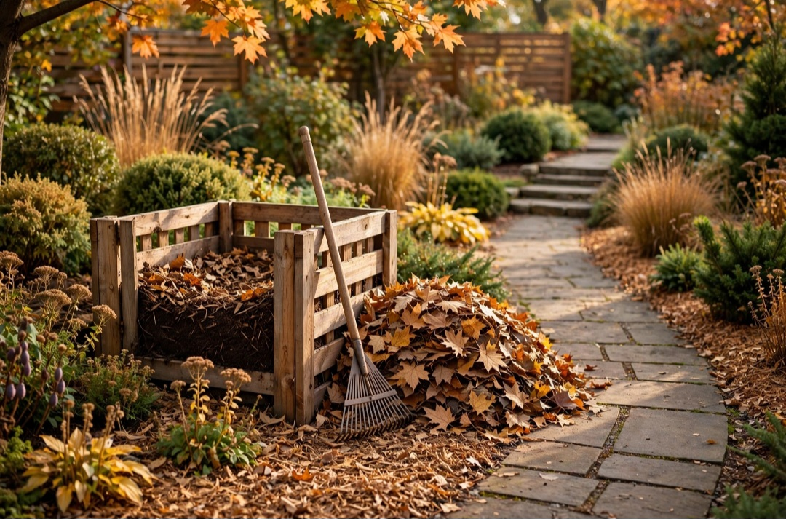

En este artículo
- Introducción
- Analiza las condiciones reales de la terraza
- Elige plantas compatibles con el cultivo en macetas
- Selecciona especies según sol y sombra
- Adapta la selección al clima de tu región
- Piensa en el tiempo de mantenimiento disponible
- Crea una composición equilibrada y práctica
- Preguntas frecuentes
- Conclusión
Introducción
Aprende a elegir plantas para terrazas según la luz, el viento, el clima, el tamaño de las macetas y el mantenimiento que puedes ofrecer.
La mejor forma de tomar decisiones acertadas es observar las condiciones reales antes de comprar o intervenir. Luz, clima, espacio, frecuencia de mantenimiento y recursos disponibles cambian por completo qué solución resulta adecuada.
En esta guía encontrarás criterios prácticos para analizar cada situación, evitar errores frecuentes y construir una rutina más sencilla. El objetivo no es seguir una fórmula rígida, sino aprender a adaptar las recomendaciones a tus plantas y a tu espacio.
Cuando una decisión afecta a varias plantas, conviene avanzar poco a poco. Probar una solución en una zona pequeña permite evaluar el resultado antes de aplicarla a todo el jardín o colección.
Analiza las condiciones reales de la terraza
Antes de comprar una planta, observa la terraza durante varios días. Anota cuántas horas recibe sol directo, en qué momento del día llega esa luz y qué zonas permanecen en sombra. No es lo mismo una terraza orientada al este, con sol suave por la mañana, que una orientación oeste, donde el calor puede concentrarse durante la tarde. La intensidad de la luz condiciona qué especies pueden mantenerse saludables sin exigir cuidados excesivos.
El viento es otro factor importante. En pisos altos o terrazas muy expuestas, las ráfagas secan el sustrato con rapidez, dañan hojas grandes y pueden desestabilizar macetas ligeras. Busca especies resistentes al viento o crea zonas más protegidas con elementos seguros. No coloques pantallas improvisadas que puedan desprenderse o actuar como vela durante una tormenta.
También conviene revisar el acceso al agua y el drenaje. Una terraza con muchas macetas puede requerir riegos frecuentes en verano, por lo que cargar regaderas desde otra habitación termina siendo incómodo. Al mismo tiempo, el agua sobrante debe salir sin causar problemas a vecinos, fachadas o pavimentos. La planificación del riego forma parte de la elección de plantas.
Finalmente, considera la temperatura. Las paredes y el suelo pueden acumular calor y crear un microclima más intenso que el del jardín a nivel del suelo. En invierno, algunas terrazas quedan más expuestas al frío. Elegir especies compatibles con estas condiciones reduce pérdidas y facilita el mantenimiento.
Elige plantas compatibles con el cultivo en macetas
No todas las plantas se adaptan igual de bien a vivir en recipientes. Algunas desarrollan raíces muy extensas o crecen con rapidez y necesitan trasplantes frecuentes. Para una terraza pequeña, suelen funcionar mejor especies cuyo tamaño adulto sea compatible con el espacio y que puedan mantenerse en macetas durante varios años con cuidados razonables.
Revisa el tamaño adulto antes de comprar. Una planta pequeña en el vivero puede transformarse en un arbusto de gran volumen. Si el espacio es limitado, prioriza variedades compactas y evita especies que necesiten podas constantes para contenerse. Podar repetidamente una planta solo para obligarla a caber suele generar más trabajo y puede afectar su forma natural.
El recipiente debe tener drenaje y un volumen proporcionado al sistema radicular. Una maceta demasiado pequeña se seca con rapidez y limita el crecimiento; una excesivamente grande retiene más humedad y puede dificultar el control del riego. Aumenta el tamaño de forma gradual cuando la planta lo necesite.
También importa el peso. Una maceta grande con sustrato húmedo puede ser muy pesada. Antes de llenar una terraza con jardineras de gran tamaño, comprueba la capacidad del espacio y distribuye las cargas de forma prudente. Para dudas estructurales, consulta a un profesional.
Selecciona especies según sol y sombra
Las etiquetas y fichas de cultivo suelen indicar si una planta prefiere sol, semisombra o sombra, pero esas categorías son orientativas. El sol directo de la mañana no tiene la misma intensidad que el de media tarde. Una especie que tolera varias horas de luz puede sufrir en una terraza extremadamente caliente si el sustrato se seca demasiado rápido.
En zonas soleadas pueden funcionar muchas plantas mediterráneas, aromáticas y ornamentales adaptadas a alta luminosidad, siempre que el clima local sea compatible. En espacios con sombra luminosa, helechos, determinadas plantas de follaje y especies que prefieren luz indirecta pueden desarrollarse mejor. Investiga cada especie antes de comprar.
Evita trasladar de golpe una planta cultivada en interior o sombra hacia sol intenso. La aclimatación gradual reduce el riesgo de quemaduras. Durante los primeros días, aumenta la exposición poco a poco y observa las hojas.
La luz también cambia con las estaciones. En verano, un toldo puede sombrear una zona que en invierno recibe sol directo. Los edificios cercanos generan sombras diferentes según la altura del sol. Elegir plantas con cierta tolerancia a esas variaciones facilita mantener una terraza estable durante todo el año.
Adapta la selección al clima de tu región
Una terraza no está aislada del clima local. Temperaturas mínimas y máximas, humedad, frecuencia de lluvias y riesgo de heladas determinan qué especies pueden permanecer fuera durante todo el año. Elegir plantas bien adaptadas suele reducir la necesidad de mover macetas, proteger constantemente o reemplazar ejemplares dañados.
Consulta fuentes locales, viveros de confianza y fichas de cultivo. Las plantas autóctonas o bien adaptadas a la región pueden ser una buena opción porque ya responden a condiciones similares, aunque también deben coincidir con la luz y el espacio disponible.
Si el clima tiene inviernos fríos, determina dónde guardarás las especies sensibles antes de comprarlas. No llenes una terraza con plantas tropicales si después no existe un lugar protegido. En zonas muy cálidas, prioriza especies capaces de soportar calor y periodos secos sin exigir riegos imposibles de mantener.

Las macetas hacen que las raíces estén más expuestas a cambios de temperatura que en el suelo. Un recipiente pequeño puede calentarse o enfriarse rápidamente. Agrupar macetas, utilizar recipientes adecuados y proteger raíces en periodos extremos puede ayudar, pero la mejor estrategia sigue siendo elegir especies compatibles.
Piensa en el tiempo de mantenimiento disponible
Una terraza puede ser muy verde sin convertirse en una obligación diaria. Antes de comprar, piensa cuánto tiempo puedes dedicar a regar, podar, limpiar hojas, trasplantar y revisar plagas. Si buscas poco mantenimiento, evita especies que requieran humedad constante o podas frecuentes.
Agrupa plantas con necesidades similares. Colocar juntas especies que consumen cantidades de agua parecidas simplifica el riego y reduce errores. No obstante, observa cada maceta de forma individual, porque tamaño, material y exposición modifican la velocidad de secado.
Instalar un sistema de riego por goteo puede facilitar el cuidado, especialmente durante vacaciones, pero debe probarse y ajustarse. No sustituye la observación. Un gotero obstruido o mal calibrado puede dejar una planta seca o saturar otra.
Dedica unos minutos por semana a revisar hojas, tallos, drenaje y estabilidad de las macetas. Retira partes secas, limpia platos y comprueba que los soportes sigan firmes. Una rutina corta y constante evita que los problemas se acumulen.
Crea una composición equilibrada y práctica
La selección de plantas también tiene una dimensión visual. Combina alturas, volúmenes y texturas sin llenar cada centímetro. Una planta de mayor presencia puede actuar como punto focal y varias especies medianas y pequeñas completar la escena. Dejar espacios vacíos mejora la circulación y facilita el mantenimiento.
Utiliza recipientes relacionados por color, material o forma para crear continuidad. No es necesario que sean idénticos. Una combinación controlada suele verse más natural y personal que un conjunto completamente uniforme.
Evita colocar plantas altas donde bloqueen vistas o generen sombra no deseada sobre especies pequeñas. Antes de comprar, imagina el tamaño adulto. Si la terraza se ve desde el interior, también puedes organizar la composición para que funcione como una extensión visual de la casa.
Finalmente, incorpora plantas de forma gradual. Empieza con algunas especies y observa cómo responden durante una temporada. Después completa únicamente las zonas que realmente lo necesiten. Este método reduce compras impulsivas y ayuda a construir una terraza adaptada a tus condiciones reales.

Errores comunes al elegir plantas para una terraza
Uno de los errores más frecuentes es comprar únicamente por apariencia. Una planta puede verse perfecta en el vivero y no tolerar el viento, el sol o el frío de la terraza. Antes de decidir, compara sus necesidades con las condiciones reales del espacio.
Otro error es llenar la terraza demasiado rápido. Muchas plantas pequeñas crecen y necesitan más volumen. Si colocas demasiadas desde el principio, después tendrás problemas de circulación, luz y mantenimiento. Empieza con menos ejemplares y deja margen para su desarrollo.
También conviene evitar macetas sin drenaje, platos permanentemente llenos de agua y soportes inestables. La estética no debe comprometer la salud de las raíces ni la seguridad del espacio.
Por último, no elijas todas las especies con necesidades completamente distintas. Un conjunto formado por plantas que exigen riegos, luces y cuidados incompatibles multiplica el trabajo. Agrupar por necesidades hace que el mantenimiento sea más sencillo.
Cómo adaptar la terraza a cada temporada
En primavera, muchas plantas reanudan el crecimiento. Es un buen momento para revisar raíces, renovar parte del sustrato cuando corresponda y reorganizar macetas según la nueva trayectoria del sol. También puedes introducir nuevas especies de forma gradual.
Durante el verano, controla con mayor frecuencia humedad y temperatura. Las macetas pequeñas se secan rápido y el suelo de la terraza puede acumular mucho calor. Protege especies sensibles durante olas de calor y evita trasplantes innecesarios en días extremos.
En otoño, reduce progresivamente el riego de las plantas que disminuyen su actividad. Limpia hojas secas y revisa que los desagües de la terraza permanezcan libres. Si vives en una región fría, decide qué especies necesitarán protección antes de la primera helada.
En invierno, evita regar por rutina. Muchas plantas consumen menos agua y el sustrato tarda más en secarse. Mantén vigilancia sobre viento y frío y revisa la estabilidad de macetas y soportes.
Preguntas frecuentes
¿Qué plantas son mejores para una terraza con mucho sol?
Depende del clima, pero conviene elegir especies que toleren varias horas de sol directo y periodos de calor. Aromáticas mediterráneas, algunas suculentas y ornamentales adaptadas pueden funcionar bien si el riego y el sustrato son adecuados.
¿Cómo elegir plantas para una terraza con sombra?
Busca especies que prefieran luz indirecta o semisombra y comprueba cuánta claridad recibe realmente el espacio. Una terraza en sombra profunda tiene menos opciones que otra luminosa sin sol directo.
¿Es mejor tener pocas macetas grandes o muchas pequeñas?
En muchos casos, unas pocas macetas bien dimensionadas son más fáciles de mantener y generan menos desorden visual. La elección depende del espacio, el peso permitido y las especies.
¿Cómo proteger las plantas del viento?
Elige especies resistentes, utiliza macetas estables y crea zonas protegidas con elementos correctamente fijados. Evita estructuras improvisadas que puedan soltarse con ráfagas fuertes.
¿Puedo instalar riego automático en una terraza?
Sí, siempre que el sistema se adapte a las necesidades de cada planta y se controle el drenaje. Conviene probarlo varios días antes de depender de él durante una ausencia.
Conclusión
Cómo elegir plantas adecuadas para terrazas requiere observar, comparar y adaptar los cuidados a las condiciones reales. No existe una solución universal que funcione igual en todos los jardines o viviendas.
La constancia suele ser más útil que realizar cambios intensos de forma ocasional. Revisar las plantas, registrar resultados y ajustar pequeñas decisiones permite mejorar progresivamente.
También es importante respetar límites de seguridad y las instrucciones de productos, herramientas o instalaciones. Cuando una tarea supera el mantenimiento básico, recurrir a un profesional puede evitar riesgos y daños.
En definitiva, un buen resultado se construye combinando información, observación y experiencia. Cuanto mejor conozcas tu espacio, más fácil será tomar decisiones sostenibles y mantenerlas a largo plazo.